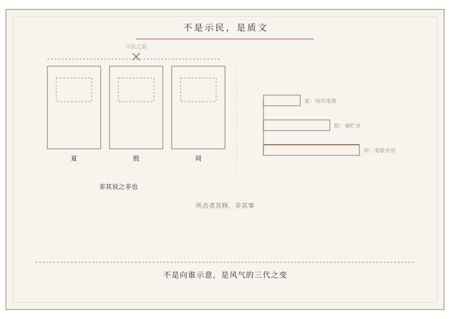

檀弓上 · 三·七十七 · 第 280 课
仲憲言於曾子曰：「夏后氏用明器，示民無知也。殷人用祭器，示民有知也。周人兼用之，示民疑也。」曾子曰：「其不然乎，其不然乎！夫明器，鬼器也；祭器，人器也。夫古之人，胡為而死其親乎？」
说什么事：仲宪（原宪）对曾子说：夏人用明器，是向百姓表示死者无知；殷人用祭器，是表示死者有知；周人两样都用，是表示拿不定。曾子连说两声「不是这样吧」，然后说：明器是给鬼的器，祭器是给人的器；古人何必把自家的亲人当死了呢。
落在哪一层：礼意之辨。论「解释过头」如何伤了礼。
为何编在此位：上节论处势之法，此节论释礼之失。前节对「势」，此节对「言」——两课皆在正名。
【经】仲憲言於曾子曰：「夏后氏用明器，示民無知也。殷人用祭器，示民有知也。周人兼用之，示民疑也。」曾子曰：「其不然乎，其不然乎！夫明器，鬼器也；祭器，人器也。夫古之人，胡為而死其親乎？」
【注】所謂「致死之」。仲憲，孔子弟子原憲。所謂「致生之」。言使民疑於無知與有知。非其說之非也。言仲憲之言三者皆非，此或用鬼器，或用人器。
【疏】此一节论不可致意于死人为死为生之事。案《仲尼弟子传》云「原宪字子思」，彼注云「鲁人也」，其时与曾子评论三代送终器具之义也。此以下是原宪所说，并非也。其言夏后氏所以别作明器送亡人者，言亡人无知，故以不堪用之器送之，表示其无知也；殷家不别作明器而即用祭祀之器送亡人者，祭器堪为人用，以言亡者有知，与人同，故以有用之器送之，表示其有知也；周世并用二代之器送亡者，不知定无知如夏、为当定有知如殷，周人为之致惑，故并用送之，是示于民疑惑不定也。曾子闻宪所说不是，故重称不然，深鄙之也。「夫明器，鬼器也；祭器，人器也」者，曾子鄙宪言毕而自更说其义也：言二代用此器送亡者，非是为有知与无知也，正是质文异耳。夏代文，言鬼与人异，故纯用鬼器送之，非言为无知也；殷世质，言虽复鬼与人有异，亦应恭敬是同，故用恭敬之器，仍贮食送之，非言为有知也。说二代既了，则周兼用之非为疑可知。寻周家极文，言亡者亦宜鬼事、亦宜敬事，故并用鬼敬二器，非为示民言疑惑也。然周唯大夫以上兼用耳，士唯用鬼器，不用人器。崔灵恩云「此王者质文相变耳」。「夫古之人，胡为而死其亲乎」者，曾子说义既竟，又更鄙于仲宪所言也；「古」谓夏时也。然宪子言三事皆非，而曾子此独讥「无知」者，以夏后氏尤古故也；讥一则余从可知也。
仲宪 孔子弟子原宪，字子思。注「仲宪，孔子弟子原宪」。
示民无知 向百姓表示死者无知。
示民有知 表示死者有知。
示民疑 表示（周人自己）也拿不定。
其不然乎 大概不是这样吧。重言之，是深深的鄙薄。疏「重称不然，深鄙之也」。
鬼器 给鬼（死者）用的器，即明器。
人器 给人用的器，即祭器。
胡为而死其亲乎 何必把自家的亲人当死（当无知）呢。死，此处为动词：当作死的。
仲宪对曾子说：「夏人用明器，是向百姓表示死者无知；殷人用祭器，是表示死者有知；周人两样都用，是表示拿不定。」曾子说：「不是这样吧，不是这样吧！明器是给鬼的器，祭器是给人的器。古时候的人，何必把自家亲人当作死了呢？」
此节短，但走了一个完整的回合：一人给出解释，一人连声否定，然后给出自己的解释。
仲宪的解释有三个漂亮的对称：夏—明器—无知；殷—祭器—有知；周—兼用—疑。三格填满，整齐得像一张表。
曾子的否定也只有一句半：先「其不然乎」两次，是态度；再「明器，鬼器也；祭器，人器也」，是事实。
然后一句反问收尾：「夫古之人，胡为而死其亲乎？」——古人何必把亲人当作死了呢。
关键在于注的一句：「非其说之非也。」——曾子不是在否认仲宪说的那些事（夏用明器、殷用祭器、周兼用，这些都是实有其事），而是否认这些事的意义是这样的。事实不假，解释错了。
第一层 「示民」二字最可疑 仲宪三句都用「示民」——礼制成了统治者向百姓发出的信号。曾子不肯接受这个词，因为一旦把丧器看作「示民」的工具，丧礼就成了宣传。疏说得斩截：「非是为有知与无知也，正是质文异耳。」
第二层 质文之变，非有无之判 疏把三代的差别重新解释：夏代文，认为鬼与人是两回事，所以纯用鬼器，这不是说死者无知；殷世质，虽也承认鬼人有别，但恭敬之心是一样的，所以用恭敬之器，还盛着食物送去，这不是说死者有知；周家极文，认为死者既该以鬼事之，也该以敬事之，所以两样并用，这不是拿不定。
同一件事，三种做法，都出于「质文」的时代气质，与「有知无知」的判断无关。这是本节最重要的转轴。
第三层 「胡为而死其亲」的责问 曾子的责问不在逻辑，在人情：谁会愿意把自家亲人当作一具无知之物？仲宪把夏人的做法解成「示民无知」，等于说古人相信自己的父母已成草木，这在曾子看来是不可能的——不是不合逻辑，是不合人心。
第四层 崔灵恩一句收束 疏末引崔灵恩：「此王者质文相变耳。」一句话把三代之异归到风格之变。这比仲宪的三格表要宽容得多：变的是风格，不是信念。
与 277 节对看 277 孔子立「两不可为」——不说无不知、不说有知，把问题悬起来；此节仲宪偏要给三代各配一个答案，曾子不认。同一件事，一边悬置，一边填格。填格的整齐，往往正是最不整齐处。
与今日何干 今人解释传统，最爱排表格：这一条为了什么，那一条针对什么，三代各有其「用意」。此节提醒：制度的成因常常只是风气，不是设计；把每一件事都解成「向谁传达什么」，是最容易过头的解释。
| 左 | 右 |
|---|---|
| 夏用明器 | 仲宪：示民无知 |
| 殷用祭器 | 仲宪：示民有知 |
| 周兼用之 | 仲宪：示民疑 |
| 其不然乎，其不然乎 | 曾子深鄙 |
| 明器，鬼器 | 对死者 |
| 祭器，人器 | 对生者 |
| 非其说之非也 | 所否者释，非其事 |
| 质文异耳 | 三代之别的真解 |
| 胡为而死其亲 | 人情之诘 |
画一间宗庙的器物房，视点平。架上分三层：上层只摆素朴无饰的陶器与竹器（口沿粗糙）；中层摆着成套的食器（有盖、有盖钮，形制规整）；下层两样并置——一半明器一半食器，中间没有界线。架前地面上摊着一张三格的空白木牌（牌面无字，格线分明）。两位深衣者立于架前，一人伸手指着木牌，一人摇头。不写文字、不画人面细节。赭色只用在木牌的三道格线与中层一只食器的盖钮。
